node
npm install gulp（查看版本号：cmd--->node -v）
写一份gulpfile.js配置gulp的参数，gulp命令执行监事来完成代码处理（压缩，重命名）
node (introduce)
Node.js是一个基于Chrome V8引擎的JavaScript运行时
node相当于浏览器的控制台（Chrome V8引擎）
前端（浏览器）
要运行JS，必须借助于HTML文件，没有HTML文件和浏览器环境的话，JS是无法运行的。
后端（服务器端）
要运行JS，既不需要HTML文件，也不需要浏览器环境，只需要Node环境，node替代了HTML文件，也替代了浏览器
JS有了node环境，可以运行在非浏览器环境下，因为node是装在系统上，所以JS可以操作系统
node（浏览器的控制台===Chrome的V8引擎）
运行JS
在该文件夹中打开cmd控制台，或在cmd中定位到该文件的位置
模块化
自定义模块化
前端
写多条<script>引入js在html中分开引入
<script src="jquery，js"></script>
<script src="cookie.js"></script>
node（后端）
模块 | 名字 |
读写文件 | fs |
创建服务器 | http |
查看系统 | os |
压缩文件 | zip |
... | ... |
HTTP-超文本传输协议
前端最多的就是ajax（http协议的一种前端实现方案）
GET/POST区别
GET | POST |
参数在url上 | 参数在请求体 |
有可能有长度 | 没长度限制 |
不安全 | 安全 |
status（状态码）
状态码 1xx 开始执行 2xx 成功 3xx 重定向 4xx 客户端错误,浏览器端 5xx 服务端
状态码 |
|
1xx | 开始执行 |
2xx | 成功（从服务器请求） |
3xx | 重定向（从浏览器之前缓存的数据中请求）----也是成功 |
4xx | 客户端错误（浏览器端）---前端 |
5xx | 服务端错误（后端） |
wamp 集成环境
创建服务器
var http = require('http');
// 该querystring模块提供用于解析和格式化URL查询字符串的实用程序。
var querystring = require('querystring');
var url = require('url');
var fs = require('fs');
var server = http.createServer(function(request, response){
// console.log(request);
// 打印request,即得知从前端请求得到什么。
// 可知，前端输入的userna：123 passwor：123。
// 此时打印台出现的为一个对象，其中url：'/?username=123&password=123'
// 因此我们现在要获取到这个url
console.log(request.url);
// cmd-------> /?username=123$password=123
// console.log(url.parse(request.url));
// cmd-------> search:'?usename=123$password=123'
// query:'usename=123$password=123'
var query = url.parse(request.url).query;
// 用querystring.parse方法将query解析成对象
var param = querystring.parse(query);
console.log(param);
// cmd-------->{username:'123',password:'123'}
// 为隐式标头设置单个标头值。
response.setHeader("Access-Control-Allow-Origin","*");
// 在添加了响应头后，，浏览器控制台---network----Heaher可以看到---Response Heahers
response.end("hello world");
// response.end()此方法向服务器发出信号，表明已发送所有响应标头和正文; 该服务器应该考虑此消息完成。必须在每个响应上调用该方法
});
// sever.listen(写端口名，范围：0-65535)
server.listen(8888);
// ----------->在浏览器中localhost：8888，页面呈现：hello world
console.log("启动服务器");
// -----------> cmd ------>启动服务器
// 修改代码后再在控制台启动一下。
// 可以先 ctrl+C 再运行一次命令
出现跨域，加一个头部解决
header("Access-Control-Allow-Origin:*")
第三方模块
可以从npm包管理中心下载第三方包，在本地node平台实现自己的一些功能。（gulp就是一个常用的第三方模块）
安装
建议在根目录下安装
npm install xxx(gulp) -g//-g表示全局安装
或者 npm i
添加包时，输入：
cnpm install cheerio --save-dev
（表示把该模块保存在package.json里的devDependencies里面）
建议安装cnpm替代npm，在命令行上输入：
除了全局安装之外，安装任何包都会被安装在该目录下node_modules
【注意】该文件夹不要传到svn和git服务器上，当移植这个项目的时候只要用package.json描述文件去代替node_modules
这份文件记录着你开发node的一些关键信息，比如你安装过什么模块作为依赖（可在package.json中查看）
卸载
npm uninstall xxx //卸载某个模块
npm uninstall //全部卸载
初始化
生成一份package.json描述文件
使用第三方模块
var request = require('request');
var gulp = require('gulp');
node.js参考教程
异步
前端（浏览器端）
前端异步只有以下几种情况
ajax xmlhttprequest
setInterval/setTimeout
jsonp
后端（服务器端node）
fs.readFile //异步
fs.readFileSync //同步
//同步
var data = fs.readFileSync('./test.txt');
console.log(data.toString());
//异步
fs.readFile('./test.txt',function(err,data2){
console.log(data2.toString());
});
回调嵌套
用promise解决
//回调嵌套金字塔（后期维护起来特别麻烦）
// setTimeout(()=>{
// console.log("买披萨");
// setTimeout(()=>{
// console.log("喝水");
// setTimeout(()=>{
// console.log("玩手机");
// }), 1000)
// }, 1000)
// }, 1000)
//利用promise解决这个问题
function buyPizza(){
return new Promise((resolve,reject)=>{
setTimeout(()=>{
console.log("买披萨");
resolve();
}, 1000);
})
}
function drink(){
return new Promise((resolve,reject)=>{
setTimeout(()=>{
console.log("喝水");
resolve();
}, 1000);
})
}
function eat(){
return new Promise((resolve,reject)=>{
setTimeout(()=>{
console.log("吃");
}, 1000);
})
}
// 使操作步骤按以下顺序执行
buyPizza().then(drink).then(eat);
// 如果使用Promise.resolve()启动Promise，则在需要传递的参数前面加return即可。
// 如果是利用Promise包装了任务，则把想要传递给下一个task的参数传入resolve()即可。
Promise
基本用法
以下来自于网络，仅供参考
ES6规定，Promise对象是一个构造函数，用来生成Promise实例
const promist = new Promise(function(resolve,reject){
if(/*异步操作成功*/){
resolve(value);
}else{
reject(error);
}
})
resolve函数的作用是，将Promise对象的状态从“未完成”变为“成功”（即从 pending 变为 resolved），在异步操作成功时调用，并将异步操作的结果，作为参数传递出去；
reject函数的作用是，将Promise对象的状态从“未完成”变为“失败”（即从 pending 变为 rejected），在异步操作失败时调用，并将异步操作报出的错误，作为参数传递出去。
Promise 实例生成以后，可以用then 方法分别指定resolved状态和rejected状态的回调函数。
promise.then(function(value){
//success
},function(error){
//failure
});12345
例子:
function timeout(ms){
return new Promise((resolve,reject)=>{
setTimeout(resolve,ms,'done');
});
}
timeout(100).then((value)=>{
console.log(value);
});12345678
let promise = new Promise(function(resolve,reject){
console.log('Promise');
resolve();
});
promise.then(function(){
console.log('resolved');
});
console.log('Hi!');
//Promise
//Hi!
//resolved123456789101112
//异步加载图片
function loadImageAsync(url){
return new Promise(function(resolve,reject){
const image = new Image();
image.onload = function(){
resolve(image);
};
image.onerror = function(){
reject(new Error('error');
};
image.src = url;
});
}12345678910111213
下面是一个用Promise对象实现的 Ajax 操作的例子。
const getJSON = function(url) {
const promise = new Promise(function(resolve, reject){
const handler = function() {
if (this.readyState !== 4) {
return;
}
if (this.status === 200) {
resolve(this.response);
} else {
reject(new Error(this.statusText));
}
};
const client = new XMLHttpRequest();
client.open("GET", url);
client.onreadystatechange = handler;
client.responseType = "json";
client.setRequestHeader("Accept", "application/json");
client.send();
});
return promise;
};
getJSON("/posts.json").then(function(json) {
console.log('Contents: ' + json);
}, function(error) {
console.error('出错了', error);
});
request
任何前端请求都有请求头、请求体、响应头（这是三个用户不可见），响应体（用户可见）。
爬虫
爬取网站的内容，可以保存到本地，或者分析页面获取有价值的信息。
但是，并非所有网站都是能爬，有些网站是防爬虫，还有一些网页是前端JS动态生成
var request = require('request');
var fs = require('fs');
// Print the error if one occurred如果发生错误，请打印错误
console.log('error:', error);
// Print the response status code if a response was received如果收到回复，请打印响应状态代码
console.log('statusCode:', response && response.statusCode);
// Print the HTML for the Google homepage.打印Google主页的HTML。
console.log('body:', body);
// 将爬取到的网站信息保存到./massage.html里
fs.writeFile('./massage.html', body, function(){
console.log('网页成功保存');
})
}) ;
console.log("开始请求");
cheerio
实现网页内容分析，用法类似于jQuery，node版本jQuery,可以用它爬取文字，图片，音频
// 爬虫酷狗音乐
var request = require('request');
var cheerio = require('cheerio');
var fs = require('fs');
//1、首先请求到歌手页面
//console.log('body:', body); // Print the HTML for the Google homepage.
const $ = cheerio.load(body);
$(".song_hid").each((i,e)=>{
// console.log($(e).attr("value"));
var src = $(e).attr("value").split("|")[1];//裁剪得到hash值
// console.log(src);
// 2、利用hash值再次请求得到歌曲信息
// console.log(JSON.parse(body).data.play_url);
var playUrl = JSON.parse(body).data.play_url;//得到歌曲路径
// console.log(JSON.parse(body).data.audio_name);
var audioName = JSON.parse(body).data.audio_name;//得到歌曲名字
request(playUrl).pipe(fs.createWriteStream('./music/'+audioName+'.mp3'))//下载数据流到./music文件夹下
});
})
});
console.log("开始请求");
express
也就是浏览器输入不同的路径，页面就有不同的返回结果
var express = require('express');
var app = express();
//''路径不同，跳转的页面不同---->路由
app.get('/', function (req, res) {
res.send('Hello World');
})
app.get('/home', function (req, res) {
res.send('Hello World');
})
app.listen(3000);
express的脚手架
npm install -g express-generator@4
创建应用结构
在一个文件夹(在需要创建路由的目录中)中用express 命令创建应用架构
express test(test是文件名)
cd test(进入到test文件夹，进入下一步)
cd test
npm install
或者：cnpm install //建议使用cnpm安装所有依赖
启动应用,这样就初始化完成了一个最简单的express项目
SET DEBUG=test:* //【注意，要把test改成与自己一开始设置的文件名相同】
npm start
创建路由
进入创建的test目录下的routes文件夹，复制一份user.js到新建的home.js文件里，改变/home的路径
var express = require('express');
var router = express.Router();
router.get('/home', function(req, res, next) {
res.send('hello world');
});
module.exports = router;
var homeRouter = require('./routes/home');//备注：表示当前文件夹下的routes目录下的home.js文件
//code
app.use('/test', homeRouter);
http://localhost:3000/test/home
MySQL
express的脚手架之一，用于与数据库连接
案例：注册
<body>
<input type="text" id="username" />
<input type="password" id="password" />
<input type="button" id="login" value="登录" />
<script src="../javascripts/jquery-3.2.1.js"></script>
<script>
$(function(){
$("#login").click(function(){
$.ajax({
type:"post",
data:{
username:$("#username").val(),
password:$("#password").val()
},
async:true,
success:function(data){
console.log(data);
}
});
})
})
</script>
var express = require('express');
var router = express.Router();
// 注册,配合mysql，连接到数据库，查看账号是否已经被注册
router.post('/register', function(req, res, next) {
// console.log(req.body);
var mysql = require('mysql');
var connection = mysql.createConnection({
host : 'localhost',
user : 'root',
password : '',
database : 'user'//数据库表格名称
});
connection.connect();//连接数据库
// 判断用户输入的注册账号是否已经存在于数据库中，即是否已经被注册，若存在，则该注册名不可用，若不存在则将该注册名存入数据库中
// 使用mysql的连接查询方法connection.query
// connection.query方法中存在回调函数,所以是异步，用promise解决
// select * from userdata where ? [{username : req.body.username;}] 表示查看userdata表中的所有数据是否等于req.body.username,若相等，表示已经数据库中存在，则不能使用
function isExistSameName(){
return new Promise(function(resolve,reject){
connection.query('select * from userdata where ? ',[{
username : req.body.username
}], function(error, results, fields) {
if (error) throw error;
console.log(results);
if(results.length > 0){//lts.length > 0 表示username有值
connection.end();//断开连接
res.send('register failed');
}else{
resolve();
}
});
});
}
// 若用户名未被注册过，则将该用户名插入到数据库中
function isInsertUser(){
return new Promise(function(resolve,reject){
connection.query('INSERT INTO userdata SET ?',[{
username : req.body.username,
password : req.body.password
}],function(error, results, fields){
if (error) throw error;
res.send('register success');
connection.end();
})
})
}
isExistSameName().then(isInsertUser);
});
module.exports = router;
var loginRouter = require('./routes/test');//备注：表示当前文件夹下的routes目录下的test.js文件
app.use('/test', loginRouter);
数据操作（参考）
来源于二阶段php结合mysql中的数据增删改查操作
插入数据
格式：insert into <表名> [(<字段名1>[,..<字段名n > ])] values ( 值1 )[, (值n )];
//单条数据
insert into MyGuests (firstname, lastname, email)
删除表数据
格式：delete from 表名 where 表达式
//删除MyGuests表中id为1的数据
DELETE FROM MyGuests where id=1;
//删除所有数据
DELETE FROM MyGuests
查询表中的数据
格式： select <字段1, 字段2, …> from < 表名 > where < 表达式 >;
select一般配合where使用，以查询更精确更复杂的数据。
//查看表 MyGuests 中所有数据
select * from MyGuests;
//查看表 MyGuests 中前10行数据：
select * from MyGuests order by id limit 0,10;
修改表中的数据。
格式：update 表名 set 字段=新值,… where 条件;
update MyGuests set name='Mary' where id=1;
multer
Multer 是一个 node.js 中间件，用于处理 multipart/form-data 类型的表单数据，它主要用于上传文件。它是写在 busboy 之上非常高效。 注意: Multer 不会处理任何非 multipart/form-data 类型的表单数据。
上传文件案例
<input type="file" id="files" name="uploadFile" multiple/>
<script type="text/javascript">
var filesNode = document.getElementById("files");
// onchange 事件：当你改变输入框内容，离开输入框后，函数将被触发，
// onchange 事件会在域的内容改变时发生。
// onchange 事件也可用于单选框与复选框改变后触发的事件。
// onchange 属性可以使用于： <input>, <select>, 和 <textarea>。
filesNode.onchange = function(){
// console.log(filesNode.flies);
var xhr = new XMLHttpRequest();
xhr.onreadystatechange = function(){
if (xhr.readyState == 4 && xhr.status == 200) {
console.log(xhr.responseText);
}
}
var data = new FormData();//创建一个空对象实例，可以用append()方法添加数据
data.append("uploadFile",filesNode.files[0]);
xhr.send(data);
filesNode.value = null;
}
// 【注意】以上中data.append("uploadFile",filesNode.files[0]);中uploadFile为input标签的name属性值，
</script>
// 实现上传文件
var express = require('express');
var router = express.Router();
var db = require('../lib/db.js');
// 实现上传必须配置的参数
var multer = require('multer');
// 磁盘存储引擎DiskStorage可以让你控制文件的存储。
var storage = multer.diskStorage({
// destination 是用来确定上传的文件应该存储在哪个文件夹中。
destination: function (req, file, cb) {
cb(null, 'public/my-uploads');//选择储存的文件夹位置，建议先建好文件夹，否则会出现'500'报错
},
// filename 给上传的文件重命名。
// 如果没有设置 filename，每个文件将设置为一个随机文件名，并且是没有扩展名的
// 注意: Multer 不会为你添加任何扩展名，但程序应该返回一个完整的文件名。
// 因此，可以把 abc.jpg图片切割为数组[abc,jpg],然后用数组长度-1来获取后缀名
// 并且可以给图片加上时间戳格式防止重名名
filename: function (req, file, cb) {
var fileFormat = (file.originalname).split('.');
cb(null, file.fieldname + '-' + Date.now() + '.' + fileFormat[fileFormat.length-1]);
// console.log(fileFormat[fileFormat.length-1]);
}
})
var upload = multer({ storage: storage });
// .single(fieldname):接受一个以 fieldname（input标签的name属性值） 命名的文件。这个文件的信息保存在 req.file。
router.post('/uploads', upload.single('uploadFile'), function (req, res, next) {
console.log(res);
next();
},function (req, res, next){
res.send('upload success');
});
module.exports = router;
FormData()方法（参考）
参考文档自行百度
//通过FormData构造函数创建一个空对象
var formdata = new FormData();
//可以通过append()方法来追加数据
formdata.append("name","laotie");--------------------->name为input标签的name属性值
//通过get方法对值进行读取
console.log(formdata.get("name"));//laotie
//通过set方法对值进行设置
formdata.set("name","laoliu");
console.log(formdata.get("name"));//laoliu
MongoDB
nosql数据库，不需要sql语句的数据库，里面一切都是类似于JSON文件
MongoDB 是由C++语言编写的，是一个基于分布式文件存储的开源数据库系统。
在高负载的情况下，添加更多的节点，可以保证服务器性能。
MongoDB 旨在为WEB应用提供可扩展的高性能数据存储解决方案。
MongoDB 将数据存储为一个文档，数据结构由键值(key=>value)对组成。MongoDB 文档类似于 JSON 对象。字段值可以包含其他文档，数组及文档数组。
安装
C:\Program Files\MongoDB\Server\3.2\bin
里面有多个exe文件
在bin这个目录下，打开cmd命令行，执行以下命令，输入的文件夹路径中若有数据库则连接此数据库，该目录中若没有数据库则执行该命令就是创建数据库成功。
mongod --dbpath [文件夹的路径](创建的数据的路径)
安装robo3t的可视化软件来管理mongodb数据库，没有表的概念，只有集合(类似于mysql的表))
配合node来使用mongodb数据库,在项目目录下用cmd安装
const MongoClient = require('mongodb').MongoClient;
const assert = require('assert');
// Connection URL
// Database Name
const dbName = '1806';
// Use connect method to connect to the server
MongoClient.connect(url, function(err, client) {
assert.equal(null, err);
console.log("Connected successfully to server");
const db = client.db(dbName);
client.close();
});
const MongoClient = require('mongodb').MongoClient;
const assert = require('assert');
// Connection URL
// Database Name
const dbName = '1806';
// Use connect method to connect to the server
MongoClient.connect(url, function (err, client) {
assert.equal(null, err);
console.log("Connected successfully to server");
//选择库
const db = client.db(dbName);
//选择集合（表）
db.collection('students').find({//find里的数据若为空，则会查找到所有数据，若有条件，则会找到条件对应的数据
age: 18
}).toArray(function (err, docs) {//toArray转成数组
assert.equal(err, null);
console.log("Found the following records");
console.log(docs);//docs为结果
});
client.close();
});
robo3t（mongodb可视化操作工具）
操作步骤（参考）：
先要在电脑启动mongoDB，然后打开Robo 3T ，点击“create”创建一个到mongoDB的连接。
接着在mongoDB启动的情况下，点击connect，Robo 3T 即可连接到mongoDB了。
在Robo 3T 左上方，可以看到mongoDB里面的数据库了，这就是可视化了。
在连接上面单击右键，有一个“open shell”，它是用来执行mongoDB中的命令或者语句的。
此外，你还可以点击Create Database直接新建一个mongoDB的数据库。
也可以点击Repair Database或Drop Database在数据库上面新建集合
点击Create connection 创建集合（也就是表）
express配合mongodb实现系统的接口
案例：后台系统增加查找数据
具体查看 C:\Users\Administrator\Desktop\third\05.day5\cms（Content Management System）
报错：db.collection is not a function
【注意】在mongodb中db.query返回的是一个函数，所以应该写成：
db.query(function(db){
//mongodb中插入数据的操作
db.collection('cmsData').insertMany([req.body], function(err, result) {
console.log("Inserted 1 documents into the collection");
// 插入完成后才响应
res.send('respond with a resource');
});
})
websocket
WebSocket提供了一个受欢迎的技术，来替代Ajax技术 。HTML5的WebSocket API，它可用于客户端、服务器端。而且有一个优秀的第三方API，名为Socket.IO ,这个新的API提供了一个方法，从客户端使用简单的语法有效地推动消息到服务器。
ajax
websocket（作用更广）
安装 npm install socket.io --save-dev
Socket.IO
socket.io一部分在node的express下设置
另一部部分浏览器页面下加载socket.io.client.js
在express使用socket
var app = require('express')();
var server = require('http').createServer(app);
var io = require('socket.io')(server);
io.on('connection', function(){ /* … */ });
server.listen(3000);
方法
接口 | 描述 |
socket.on() | 发送信息 |
socket.emit() | 接受信息 |
具体操作案例
逻辑：前端发送，后端接收。后端再把接收到的数据发送到前端
前端
<!DOCTYPE html>
<html lang="en">
</head>
<body>
<textarea name="" id="massage" ></textarea>
<input type="button" value="发送" id="send" />
<ul id="massaegList"></ul>
<script type="text/javascript" src="../javascripts/socket.io.js"></script>
<script type="text/javascript" src="../javascripts/jquery-3.2.1.js"></script>
<script type="text/javascript">
socket.on('connect', function() {});
socket.on('event', function(data) {});
socket.on('disconnect', function() {});
//发送
$("#send").click(function(){
socket.emit("sendMsg",$("#massage").val());
})
//接收
socket.on('getMsg',function(data){
$("#massaegList").append(`<li>${data}</li>`)
})
</script>
</body>
</html>
后端
在express中使用
// 将socket接口封装再导出到app.js文件中，就可以方便引用
function socket(){
// In conjunction with Express结合express使用socket
var app = require('express')();
var server = require('http').createServer(app);
var io = require('socket.io')(server);
io.on('connection', function(socket){
//socket信息的逻辑编写在这里
//接收
socket.on('sendMsg',function(data){
console.log(data);
//发送
socket.emit('getMsg',data);
})
});
server.listen(3001);
//【注意】端口号不可以与其他冲突，如express的端口号为3000，因此这里不要再应用3000端口号
}
// 将接口导出(到app.js)
module.exports = {
socket
}
//socket路由
require('./routes/socket.js').socket();

 d.toUTCString();
d.toUTCString();

 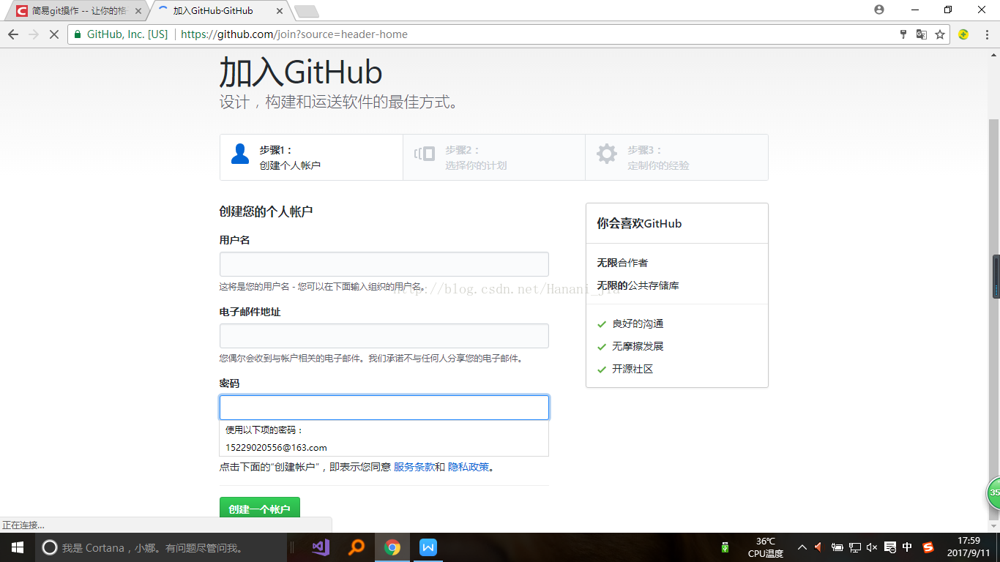
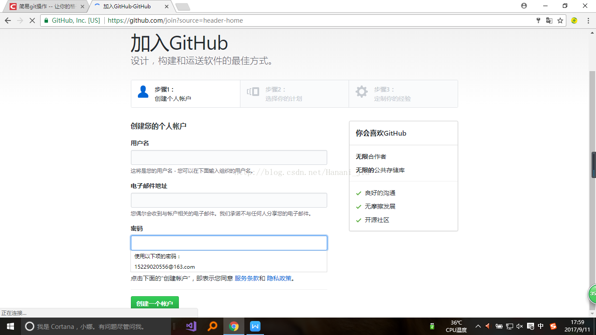 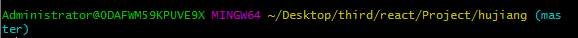
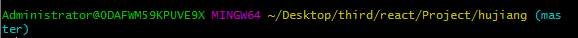 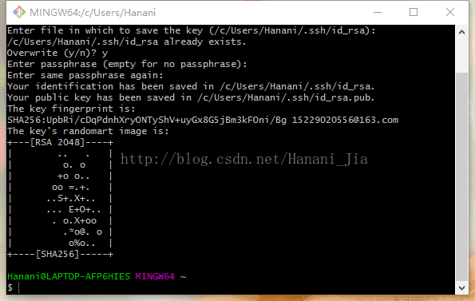
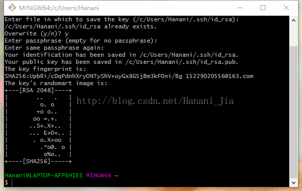 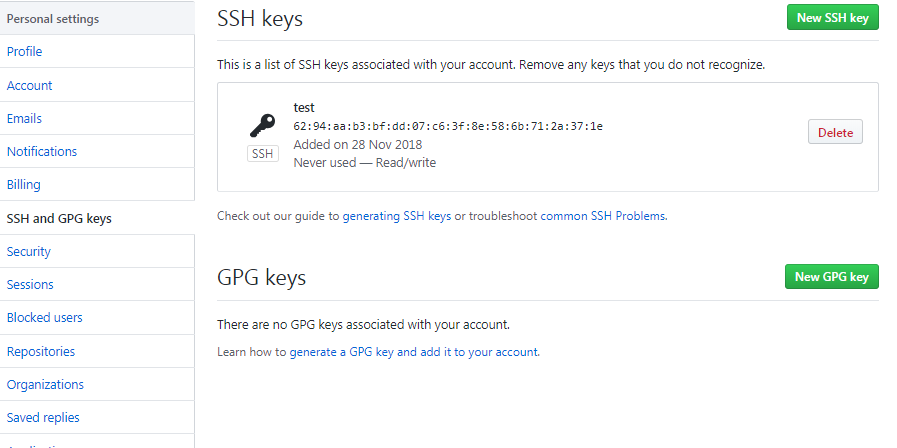
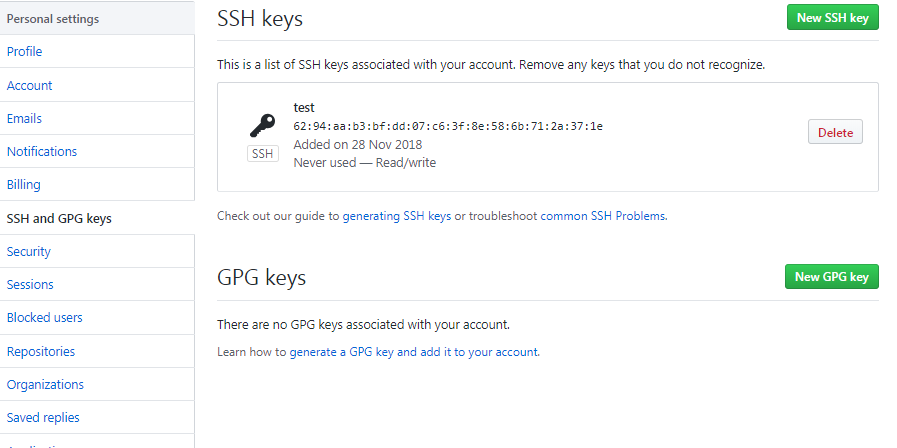 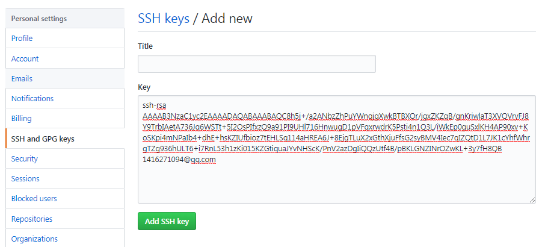
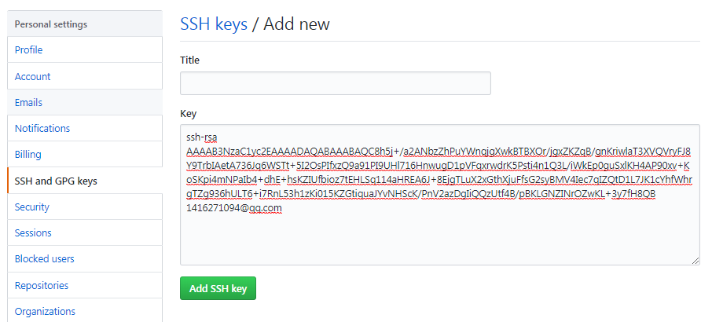


 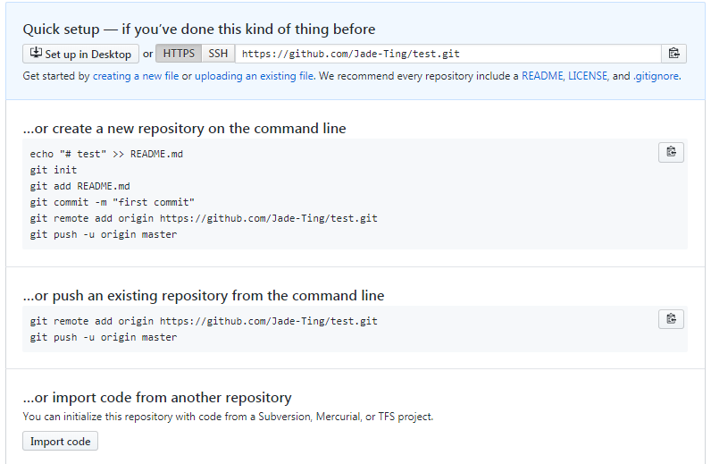
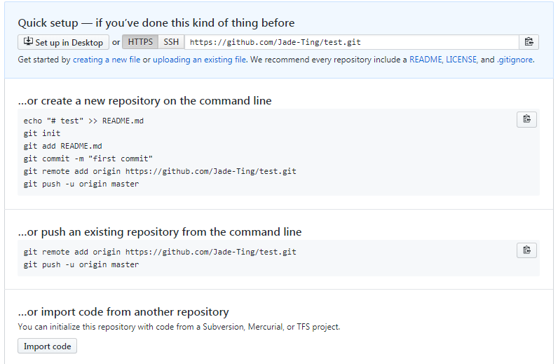 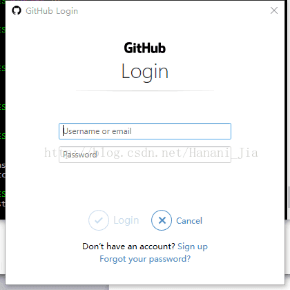
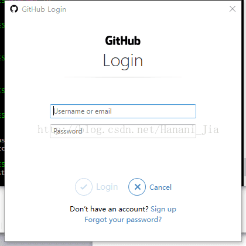 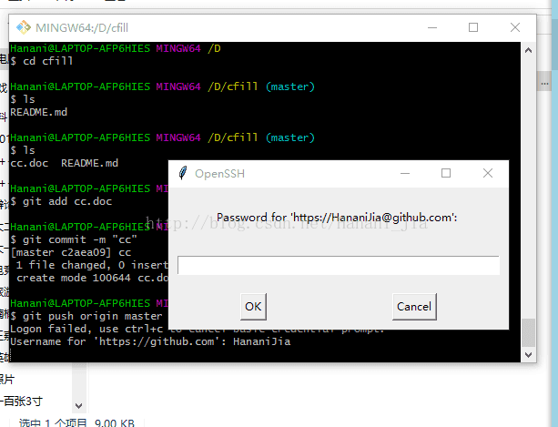
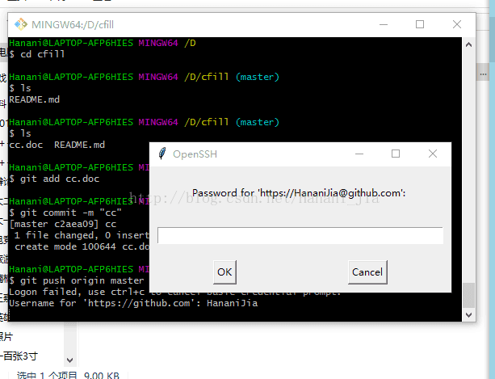 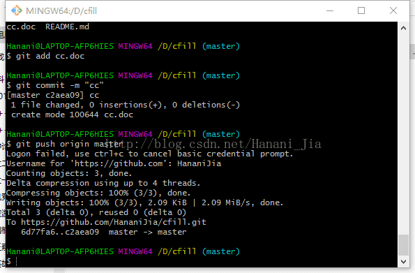
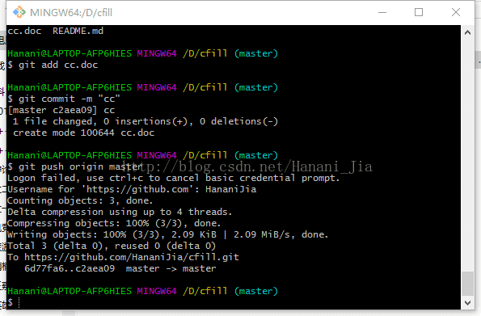 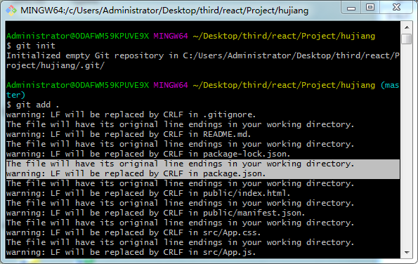
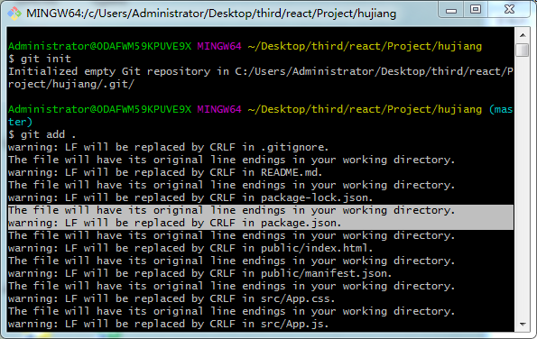 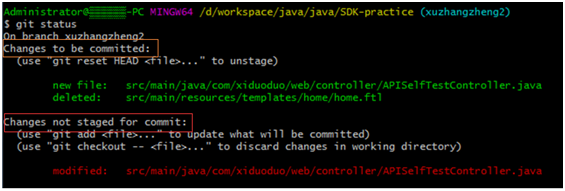
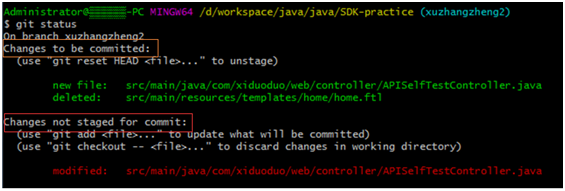

{kind=link}